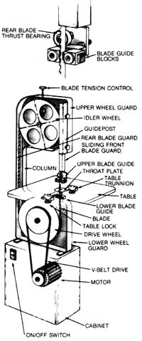

Last issue we presented a guide to choosing a suitable table saw. Now we continue with...
Versatility is the band saw's strong suit. For the cost of a single tool, the home woodworker actually has the use of [1] a precision machine that's capable of cutting curves, circles, and intricate shapes in wood up to half a foot thick, [2] a hard-working ripsaw that can accurately slice a hefty piece of lumber into thinner boards, and [3]-with the addition of a special platen and an abrasive belt-a convenient edge sander for flat or contoured stock.
All band saws share the same basic design. A loop of steel blade centered on two (or sometimes three) large wheels mounted in the same vertical plane does the cutting; adjustable guides fastened near the center of the blade's straight span keep the toothed edge in line, both laterally and against rearward pressure; and a motor, connected by belt (or, less often, directly) to the lower wheel, moves the blade. The upper wheel(s) are mere idlers and can be adjusted to keep the blade tracking a straight path.
So if there's not a whole lot of difference between one design and the next, what explains the wide variations in price among tools of similar capacities? Read on, and you'll find out . . . and be sure to study the chart, as well, to determine what the manufacturers and importers have available to suit your particular needs.
Before you purchase this major tool, you might first ask yourself what kind of work you'll be doing with your band saw. If you plan on tackling a considerable amount of resawing, especially of oak and other furniture-grade hardwoods, be certain the tool has sufcient power and cutting capacity to slice board after board without overheating. (A 3/4- or 1-horsepower motor-at least-and a cutting depth of 6" or more are desirable under these circumstances.)
On the other hand, if the majority of your work will involve small pieces of stock and precision cuts, you may do just as well with a bench-top model . . . or even a scroll saw, which is another tool entirely.
Then again, you might be in the market for a general-purpose band saw that'll handle a little bit of everything you throw at it. If this is the case, be sure to choose one that can accommodate a good variety of blade widths and configurations . . . and, for your own benefit, assure yourself that the manufacturer has given some thought to the convenience of the necessary blade-changing operations.
While we're on the subject of multipurpose applications, you should be aware that many of the larger saws are designed as-or can easily be adapted to become-combination wood-, plastic, and metal-cutting machines. Since a wood blade cuts at a relatively high speed (usually in excess of 2,000 surface feet per minute), a multistep pulley drive or a jackshaft is commonly used to reduce that rate, by one-quarter to one-tenth, to avoid heat buildup when the wider metal-cutting blades are being used. Look for one of these features, plus at least a 1/2" blade-width capacity, and a 3/4-horsepower or larger motor if you plan on cutting mild steel or any other ferrous metals.
And think about the tool's other capacities. The 6" cutting depth mentioned earlier is common and should be more than sufficient for most tasks. But the throat depth (the distance between the blade and the column that supports the upper wheel) is important too, especially if you'll be working with plywood or other sheet stock. In conventional band saw designs, this dimension is dictated by the diameter of the two band wheels, usually 10, 12, or 14 inches . . . but a three-wheel configuration relies on triangulation to keep the column and the unused part of the blade as far as two feet from the cutting edge.
The table size-typically in the neighborhood of 14" square-isn't all that critical, though extensions are usually available as options if you need them. Many band saw manufacturers also offer or include rip fences and miter gauges to aid in precision cutting, and incorporate a tilting trunnion into the table mount to allow that surface to be set at up to a 45° angle.
Quality comes at a price, and with a band saw, quality is synonymous with utility and ease of operation. Before you buy, make an effort to examine, and even use, the tool you've got your sights on. Keep in mind that unless you're planning on moving it from site to site, the machine's weight is an asset, since sheer mass helps to dampen vibration. For this reason, cast-iron frame construction is a plus, as is a heavy, machine-ground table with sufficient integral ribbing. Look, too, for signs of surface drilling on the band wheels, as this will indicate that they've been balanced.
Critical to the saw's precision-or lack of it-is blade guide construction. In a perfectly tuned band saw, the blade will run freely without touching the sides of the guides and will make contact at the rear only when stock is actually being cut. Most guides have a ball bearing stop at the back and steel, brass, or phenolic blocks-or a set of ball bearings-to the sides. Regardless of the method used to keep the blade true, it's important that the working components have a range of adjustment. By the same token, the idler wheel(s) should be adjustable as well . . . laterally, to keep the blade tracking correctly, and vertically, to allow convenient tensioning of that steel band.
The blade's accuracy means little if the table is not square, however. Check to see that its supporting trunnion is sturdy and can lock the table firmly in place at any desired angle. Make sure, too, that it returns perpendicular to the blade; many saws have a threaded stop so the platform can be set correctly.
On some of the larger saws, you can choose the motor according to your needs. For general use, a 3/4- or 1-horsepower unit would be perfectly adequate for a 14" machine . . . but assure yourself that the figure quoted is a continuous, or rated, horsepower and therefore appropriate for long periods of use. (Remember that a 110-volt motor should draw be tween 10 and 13 amps to develop 1 continuous horsepower.) Other points of concern are that the power plant be overloadprotected, have sealed bearings, and preferably have a totally enclosed, rather than just a dripproof, housing.
The drive mechanism also deserves a brief mention. All but the smallest saws should use a V-belt drive to the lower wheel. Direct-drive setups are inexpensive, but they increase stress on the wearing parts and have a tendency to bog down under load.
Last, but certainly not least, check out your potential purchase from a user-safety standpoint. Does it have a substantial rear blade guard? Does the front guard slide down the guidepost with the upper guide and cover all but the actual cutting edge of the blade? Are all moving parts fully shrouded or enclosed? Both bench and stationary models should be stable and vibration-free, with a throat plate around the blade, an easily accessible shutoff switch, and provision for a work light.
The saw you purchase will affect the quality of your work for a long time to come. By taking the time now to examine the products in your price range and relying on investigation rather than impulse, you should get your hard-earned money's worth.
If your needs exceed the capability of even a top-of-the-line home-shop tool, you might investigate the following manufacturers, which supply the production and large commercial markets. (As another alternative, we've included the address of Gilliom Manufacturing, Inc., which offers plans, parts, and castings for a selection of kit-built woodworking tools.)
Gilliom Manufacturing, Inc.
1700 Scherer Pkwy.
St. Charles, MO 63301
Hitachi Power Tools U.S.A., Ltd.
4487-F Park Dr.
Norcross, GA 30093
Holz Machinery Corp.
N'RA Models
45 Halladay St.
Jersey City, NJ 07304
Oliver Machinery Co.
1025 Clancy Ave. N. W.
Grand Rapids, MI 49503
Parks Woodworking Machine Co.
1501 Knowlton St.
Cincinnati, OH 45223
Powermatic-Houdaille
Morrison Rd.
McMinnville, TN 37110
Tanewitz
B.M. Root Co.
P.O. Box 1226
York, PA 17405
Mother's Band Saw Survey Chart
|
|
 |
|